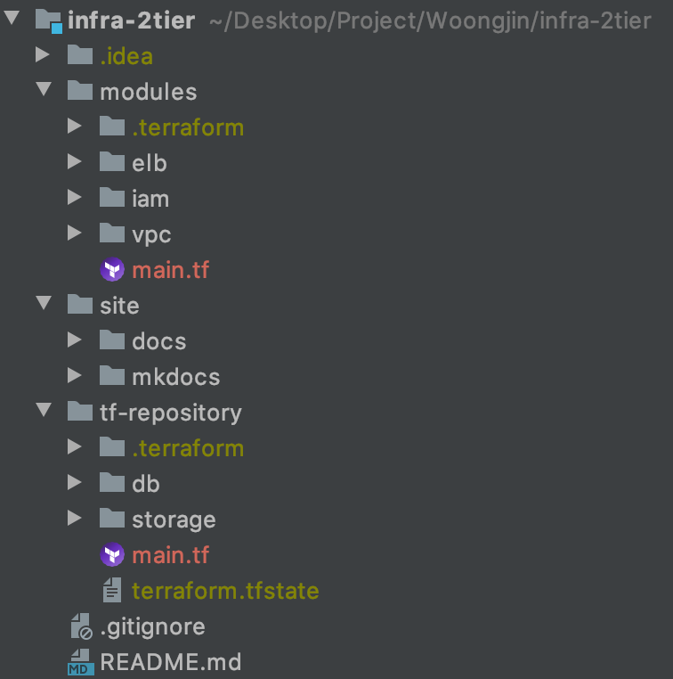

Infra-2tier Directory
infra-2tier의 디렉토리 구조입니다.

1. modules
infra-2tier의 베이스 모듈로 구성되어 있습니다.
1.1 elb
기본
AWS ALB가 구성되어 있습니다.
listner와 listener rules는 베이스 모듈에 attach되는 프로젝트에서 추가하여 사용하실 수 있습니다.
1.2 iam
EC2, Code-Deploy에서 사용될
iam role이 구현되어 있습니다.
1.3 tf-repository
S3저장소와 Lock 관리를 위한DynamoDB가 구현되어 있습니다.
1.4 vpc
VPC와 관련된 igw, nat, subnet, route table 등으로 구현되어 있습니다.
2. site
2.1 docs
infra-2tier
명세 및 아키텍쳐와 관련된 문서가 포함되어 있습니다.
2.2 mkdocs
매뉴얼 가이드폴더입니다.
mkdocs 마크다운 방식으로 글쓰기를 하며,mkdocs serve라는 명령어를 통해서 실시간으로 매뉴얼 내역을 확인할 수 있습니다. (mkdocs.org 참고)